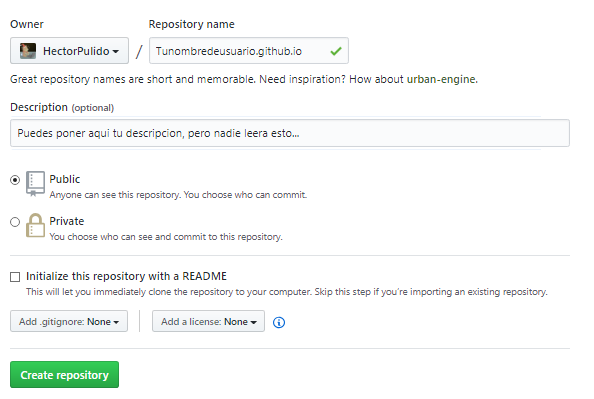

Ya deberías saber (y si no lo sabes te lo explico) que github te permite poner paginas webs, el problema con estas paginas webs es que son estáticas, son más planas que la cara de la actriz principal de crepúsculo (¿cómo se llamaba?, recuérdamelo en mi twitter por favor @Hector_Pulido_).
Estático es lo contrario a la definición de un blog, un blog debe tener links dinámicos debe ser fácil de leer y otro montón de cosas que serian un caos para quien lo administré, es por eso que me puse a buscar opciones.
Firebase
A estas alturas es difícil no haber oído hablar de firebase, es todo un unicornio, backend y administración de base de datos sin bases de datos, es perfecto para un proyecto como este, solamente tengo que usar algún framework como react y podría haber tardado un 2% de lo que tarde haciendo esto, sin embargo, quería dos cosas, la primera un reto y la segunda que fuera un proyecto fácil de “forkear”.
Jekyll
No mentiré, lo que intenta no es nada nuevo, Jekyll hace lo que necesito y además lo hace mejor, sin embargo, debo ser sincero, no me he dado el tiempo para aprender esta tecnología, además simplemente usar Jekyll no seria un reto para nada, algo que probablemente no sepas de mi es que soy egocéntrico así que difícilmente mi orgullo me permitirá usar Jekyll en un futuro cercano.
Así que hice todo de cero, utilizando únicamente la Api de github y mi ingenio me las arregle para tener algo funcional, antes de explicarte que hice te mostrare como crear esa página estática.
Una página estática igual es útil para varias cosas como una Landing Page o algún demo de Javascript o cosas así, por lo que probablemente te sea útil esto, simplemente debes crear un repositorio con esta estructura TuNombreDeUsuario.Github.Io, este además del nombre del repositorio será el dominio de la web (puedes poner un dominio propio pero por ahora dejémoslo asi), cuidado con las mayúsculas por que a github no le gusta que te equivoques con eso… 😩
Luego de que termines de crear el repositorio solo debes subir un archivo Html que haga las veces de Index, obvio también puedes agregar Css Y Javascript, así lo hice yo en este proyecto, solo ten cuidado con las mayúsculas, ¡a github no le gusta que cambies nada! Cuando ya tengas todo subido simplemente entra a la Url que elegiste y tu página debería estar On, para actualizarla simplemente sube archivos nuevos que remplacen a los antiguos y ya deberías tenerlo.

Ya lo sencillo esta listo… ahora falta lo difícil hacer dinámica nuestra página, para ello he utilizado un script de javascript que hace uso de la Api de github, hay una carpeta especial en el repositorio donde están guardados todos los posts del blog, luego veras la estructura, pero lo mas importante es conocer los path exactos, el api de github te dará información sobre que archivos hay y mas importante EL LINK DE LA CARPETA 😱 Simplemente haciendo un Get Request a la Url 'https://api.github.com/repos/'+username+'/'+repository+'/contents/' + path
Dentro de la carpeta del post hay un archivo Json que tiene información sobre el Posts, como el Indice, el Titulo y una Microdescripcion, esos datos se los paso al DOM y así tengo los links dinámicos del blog.
let postBase = `<div class="col-md-4">
<a href="{Link}"><h3>{Titulo}</h3>
<p>{Contenido}</p></a>
<a href="{Link}" class="btn btn-lg btn-secondary">Leer todo.</a>
</div>`;
let posts = document.getElementById("entradas");
class HttpClient {
constructor() {
this.get = function (aUrl, aCallback) {
var anHttpRequest = new XMLHttpRequest();
anHttpRequest.onreadystatechange = function () {
if (anHttpRequest.readyState == 4 && anHttpRequest.status == 200)
aCallback(anHttpRequest.responseText);
};
anHttpRequest.open("GET", aUrl, true);
anHttpRequest.send(null);
};
}
}
const username = 'HectorPulido';
const repository = 'hectorpulido.github.io';
const path = 'Posts/';
var client = new HttpClient();
client.get('https://api.github.com/repos/'+username+'/'+repository+'/contents/' + path, function(response) {
let r = JSON.parse(response);
let i = 0;
r.forEach((element)=>
{
if(element.name !== "index.html")
{
let url = element.html_url.replace("github.com/"+username+"/", "").replace("/blob/master", "").replace("/tree/master", "");
client.get(url + "/content.json", (d)=>
{
i = i + 1;
let data = JSON.parse(d);
posts.innerHTML += postBase.replace("{Titulo}", data.Title).replace("{Contenido}", data.Description).replace("{Link}", url).replace("{Link}", url);
});
if(i>=3)
{
return;
}
}
});
Ya con eso tenemos un blog funcional, para crear un post, simplemente tenemos que crear una pagina nueva dentro de la carpeta designada, en mi caso así es como se ve la estructura del proyecto.

Cuéntame en mi @Hector_Pulido_ que te parece este pedazo de locura que he montado, ¿tienes alguna forma de mejorarlo? Si es así me encantaría saber tu opinión.
¡Suscribete a mi canal de youtube para mas contenido!